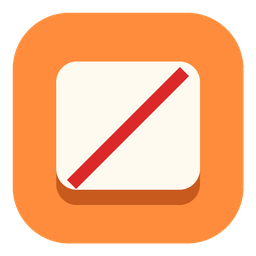

Tippy TappyA small, free Mac menu bar app. Start typing and your microphone goes quiet; stop and it comes back. Works with Zoom, Teams, Meet, Discord — anything that uses your mic.
Download for MacThat's the whole app. The real one does this for every app on your Mac, from the menu bar.
It just watches for typing. The first keystroke mutes, and a second after the last one you're back.
It turns down the system input volume rather than fiddling with each app, so it works with whatever you use to talk.
Pair-programming? Pause it from the menu bar and type as loudly as you like.
Three menu bar icons, an optional mute indicator, a tunable delay, and launch at login.
Tippy Tappy sits in your menu bar. On first launch macOS asks for Input Monitoring permission — that's how it knows you're typing. It never records keystrokes, and the code is open for you to check.